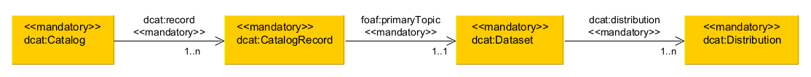
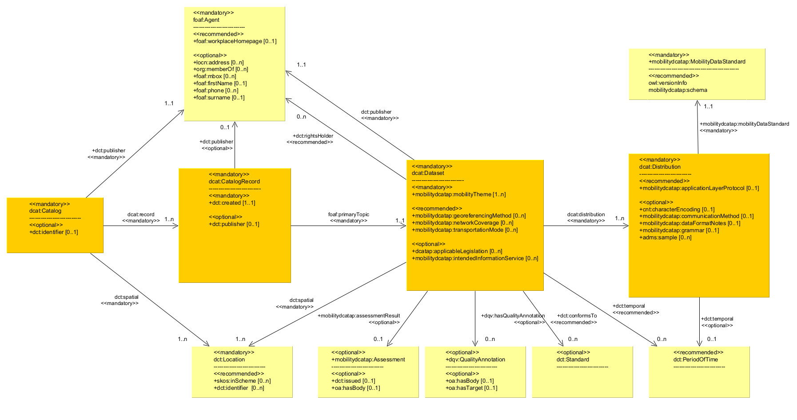
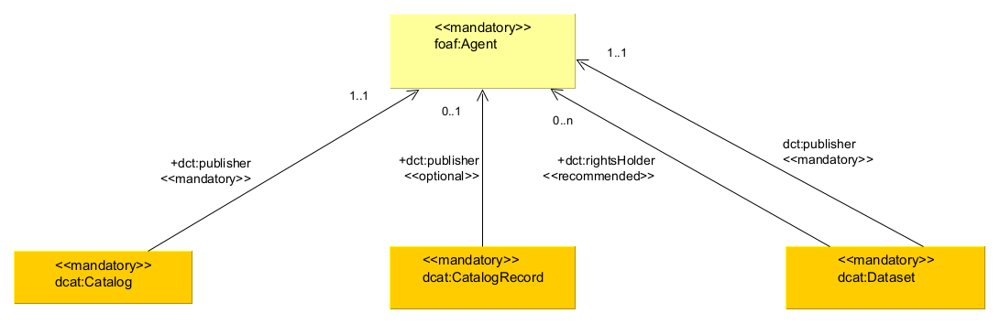

Main entities
A quick reference table of properties per class is included in .
mobilityDCAT-AP is a mobility-related extension of the DCAT application profile for data portals in Europe (DCAT-AP) [[DCAT-AP]]. It allows for a structured, interoperable and harmonised way to describe and exchange metadata about datasets and data services with a mobility relevance.
This document is a product of sub-working group 4.4 of the NAPCORE project [[NAPCORE]] consortium.
Comments and queries should be sent via the issue tracker of the dedicated GitHub repository.
This document presents version 3.0.0 of the specification for mobilityDCAT-AP, a mobility-related extension of the DCAT application profile for data portals in Europe (DCAT-AP) [[DCAT-AP]]. mobilityDCAT-AP aims to provide a structured, interoperable and harmonised approach to describing and exchanging metadata about datasets and about access for such datasets related to mobility, and in particular related to Intelligent Transport Systems (ITS). Its primary goal is to enhance the cross-border and cross-sectorial discoverability of ITS- and mobility-related datasets published on relevant data portals.
For this purpose, mobilityDCAT-AP introduces an RDF vocabulary and the corresponding RDF syntax, building upon the foundations of the original [[DCAT-AP]], while extending and customizing it for the mobility sector.
Digitalisation in the mobility domain often implies that various data assets from various actors in the mobility system are made discoverable and accessible. Accordingly, internet portals for mobility data have been developed all over the world in recent years. These portals often have specific spatial or thematic coverage, e.g., exposing public-transport timetable data for one specific region. In addition, legal obligations, such as those established through the European Union's National Access Points (NAPs) [[NAPCORE-NAPs]], mandate the creation and population of such portals.
Metadata is a crucial building block for the accessibility and reusability of datasets within NAPs and other mobility data portals. A common metadata approach can act as an important infrastructure and reference basis for providing harmonious and homogenous ITS- and mobility-related data descriptions across Europe, thus accelerating the easiness of searching, discovering, and accessing the proper data resources through the operated relevant data portals.
To serve this need, a dedicated Working Group within the EU-funded project NAPCORE [[NAPCORE-Metadata-Working-Group]] has developed a formal metadata specification as an extension to DCAT-AP, called mobilityDCAT-AP.
mobilityDCAT-AP enables harmonised, platform-independent metadata descriptions in the mobility domian both in human-readable and machine-readable formats. The latter one ensures seamless integration of mobility-related platforms with third party systems by enabling the automated import and export of metadata via, for example, an API. As a specification based on the Resource Description Framework (RDF) schema, mobilityDCAT-AP leverages semantic technologies, enabling advanced querying and inference capabilities based on metadata.
mobilityDCAT-AP provides precise and unambiguous metadata designations for any data offering with mobility relevance, e.g. for representing the data topic, the data provider or the data format. It is highly recommended that the metadata management of National Access Points (NAPs) in Europe, or any other mobility data portals, is based on mobilityDCAT-AP in order to harmonise their data descriptions and ease the exchange of metadata in the mobility data ecosystem. Furthermore, this will ensure the basis for extended interoperability, among others, with other NAPs or data portals.
This work has been carried out in the context of sub-working group 4.4 of the [[NAPCORE]] project. NAPCORE is an EU-cofunded Programme Support Action under the GRANT AGREEMENT No MOVE/B4/SUB/2020-123/SI2.852232.
mobilityDCAT-AP is designed as an extension of [[DCAT-AP]] in conformance with the guidelines for the creating of DCAT-AP extensions [[DCAT-AP-EG]]. The DCAT-AP Application Profile, upon which this document is based, is version 3.0.0. of 14 June, 2024 [[DCAT-AP-v3.0.0]].
The scope description of [[DCAT-AP-v3.0.0]] is also valid for this version of mobilityDCAT-AP. In particular, the purpose of this specification is to facilitate data exchange. Therefore, the classes and properties defined in this document are only relevant for the data to be exchanged. There are no specific requirements for the systems involved in the data exchange process to implement particular technical environments, as long as they can export and import metadata in RDF, in conformance with mobilityDCAT-AP. Further, this specificaition, beyond what is defined in Conformance Statement, does not cover implementation issues such as data exchange mechanisms and the expected behavior of systems implementing mobilityDCAT-AP.
It is important to consider this dependency on the DCAT-AP specifications when reading and implementing mobilityDCAT-AP. The corresponding specifications should be consulted to address any gaps or missing information in this document.
Comparing mobilityDCAT-AP to [[DCAT-AP-v3.0.0]], the following edits have been made:
Some of the class and property additions align with the parallel DCAT-AP extension [[GEODCAT-AP-v3.0.0]], enabling compatibility between the two extensions in terms of class and property additions.
All classes and property additions are marked with a prepended “plus” sign (+) in this document, and summarised in the reference table in .
The removal of optional or recommended properties from DCAT-AP aims to minimise the vocabulary size of mobilityDCAT-AP, avoiding any misinterpretations and multiple usage of properties among data senders.
Properties removed from [[DCAT-AP-v3.0.0]] are marked with a prepended “minus” sign (-).
These edits aim to capture some specific characteristics and features of mobility data, when exposed on NAPs and mobility data portals. Thus, they are meant to provide a DCAT-AP-conformant representation of metadata specific to mobility data.
This application profile has the status NAPCORE Recommendation published at 2025-12-xx.
Information about the process and the decisions involved in the creation of this specification are consultable at the Changelog - see .
Copyright © 2025 NAPCORE. All material in this repository is published under the license CC-BY 4.0, unless explicitly otherwise mentioned.
In order to conform to this Application Profile, an application that provides metadata MUST:
For the properties listed in the table in , the associated controlled vocabularies MUST be used. Additional controlled vocabularies MAY be used.
In addition to the mandatory properties, any of the recommended and optional properties defined in MAY be provided.
Recommended and optional classes may have mandatory properties, but those only apply if and when an instance of such a class is present in a description.
In order to conform to this Application Profile, an application that receives metadata MUST be able to:
As stated in , "processing" means that receivers must accept incoming data and transparently provide this data to applications and services. It does neither imply nor prescribe what applications and services finally do with the data (parse, convert, store, make searchable, display to users, etc.).
Part of the following text has been reused and adapted from [[DCAT-AP-v2.0.1]].
An Application Profile is a specification that re-uses terms from one or more base standards, adding more specificity by identifying mandatory, recommended and optional elements to be used for a particular application, as well as recommendations for controlled vocabularies to be used.
A Dataset is a collection of data published or curated by a single source and available for access or download in one or more formats. In the mobility context, this might be, e.g., a data collection about static parking information for truck drivers published by a road authority.
A Data Portal is a Web-based system that contains a data catalogue with descriptions of datasets and provides services enabling the discovery and re-use of the datasets.
In the context of mobility, this might be a National Access Point addressing the EC ITS Directive [[NAPCORE-NAPs]]. Accordingly, a NAP aims to "...facilitate access, easy exchange and reuse of transport-related data, in order to help support the provision of EU-wide interoperable travel and traffic services to end users." It is realised as "...a database, data warehouse, data marketplace, repository, and register, web portal or similar...".
In the context of NAPs, the terms "Metadata registry", "Metadata entry", and "Publication" are often used, which are explained in the following.
A Metadata registry is a digital recording of all metadata entries in a data portal, each describing the administration, organisation, and content of individual publications, including the published datasets and the corresponding distributions. The most visible Metadata representation is the dataset descriptions in a GUI of a NAP portal.
A Metadata entry (sometimes called metadata record or metadata set) describes the administration, organisation, and content of an individual publication, including the published dataset and the corresponding distributions.
A Publication is an abstract construct that covers a dataset published by a data publisher and which has one or multiple distributions.
mobilityDCAT-AP (as well as DCAT-AP) is expressed as an RDF schema [[RDF-SCHEMA]]]. An RDF schema provides a data-modelling vocabulary for RDF data. It provides mechanisms for describing groups of related resources and their relationships. This is done via a class and property system.
A Class is a group of resources. Classes are themselves resources. They are often identified by IRIs and may be described using properties.
A Property is a relation between subject resources and object resources.
The following figure shows the core elements of the DCAT-AP data model, denoting how the above-mentioned terms and relations are expressed as classes and properties. This figure also shows how NAP-related terms, such as publications, are related to this class and property structure.
In the following sections, classes and properties are grouped under headings ‘mandatory’, ‘recommended’ and ‘optional’. These terms have the following meaning, relating to the potential responsibilities of metadata senders and metadata receivers.
Such metadata senders and receivers are important actors for interoperable metadata, i.e., whenever metadata is exchanged between IT systems. This is the case when a data portal has metadata import and export functions. In this case, metadata senders and receivers are individual data portals. So, the following terms refer to the capability of a data portal to provide corresponding metadata in an export function or to read them in an import function.
The meaning of the terms MUST, MUST NOT, SHOULD and MAY in this section and in the following sections are as defined in [[RFC2119]].
In the given context, the term "processing" means that receivers must accept incoming data and transparently provide these data to applications and services. It does neither imply nor prescribe what applications and services finally do with the data (parse, convert, store, make searchable, display to users, etc.).
Classes are classified as ‘Mandatory’ in if they appear as the range of one of the mandatory properties in .
All other classes are classified as ‘Optional’ in . A further description of the optional classes is only included as a sub-section in if the Application Profile specifies mandatory or recommended properties for them.
The namespace for mobilityDCAT-AP is: https://w3id.org/mobilitydcat-ap#
The suggested namespace prefix is: mobilitydcatap
The Application Profile reuses terms from various existing specifications, following established best practices [[?DWBP]]. The following table indicates the full list of corresponding namespaces used in this document.
For a first orientation in mobilityDCAT-AP, these four central classes should be considered: dcat:Catalogue, dcat:CatalogRecord, dcat:Dataset and dcat:Distribution; as well as the properties connecting these four classes.
shows an excerpt of the UML diagram of the mobilityDCAT-AP model, showing these four central classes and their connecting properties.

These four central classes represent a hierarchical concept when describing metadata via mobilityDCAT-AP. Firstly, the Catalogue as such is described, i.e., being the metadata register in a data portal. Secondly, there is the Catalogue Record, which describes the metadata entry, including its publication date. Thirdly, the Dataset is described. In fact, most metadata elements are covered here, including the content theme; the spatial and temporal context; quality information and others. Finally, the distribution describes a technical and organisational way to access the Dataset. In addition to the data format (e.g., a machine-readable syntax standard), the licensing terms are described here.
Please note that two of the connecting properties, dcat:record and dcat:distribution, have a mandatory obligation, in contrast to [[DCAT-AP-v2.0.1]]. Thus, a complete metadata set in accordance with mobilityDCAT-AP SHOULD contain at least one instance of these four classes. See also the usage notes for properties dcat:record and dcat:distribution.
shows a more complex UML diagram with selected classes and properties included in mobilityDCAT-AP.
It shows the four central classes (marked in orange), as explained above, as well as some supportive classes (marked in yellow).
In this diagram, the focus is on classes and properties which have been added in mobilityDCAT-AP in comparison to [[DCAT-AP-v2.0.1]]. All additions are marked with a prepended “plus” sign (+), and summarised in the reference table in .

shows a reduced UML diagram with classes and properties that are declared mandatory in mobilityDCAT-AP.

A complete UML diagram with all elements is not shown here, but can be reconstructed from the UML diagram on [[DCAT-AP-v2.0.1]].
A quick reference table of properties per class is included in .
The following datatypes are used within this specification.
The following is a list of requirements that were identified for the controlled vocabularies to be recommended in this Application Profile.
Controlled vocabularies SHOULD:
These criteria do not intend to define a set of requirements for controlled vocabularies in general; they are only intended to be used for the selection of the controlled vocabularies that are proposed for this Application Profile.
In the table below, some properties are listed with controlled vocabularies that MUST be used for the listed properties. The declaration of the following controlled vocabularies as mandatory ensures a minimum level of interoperability.
Compared with [[DCAT-AP-v2.0.1]], mobilityDCAT-AP makes use of additional controlled vocabularies. External organisations maintain some of these additional controlled vocabularies, and others are created and maintained by mobilityDCAT-AP.
Further, mobilityDCAT-AP is removing some recommended and properties from [[DCAT-AP-v2.0.1]], which are linked with controlled vocabularies. Thus, these controlled vocabularies are not relevant for mobilityDCAT-AP and are not listed in the following table.
In [[DCAT-AP-v2.0.1]], chapter 5.3 and 5.4, several other controlled vocabularies are recommended for consideration, including EuroVoc, CERIF standard vocabularies, the Dewey Decimal Classification and sevaral licence-related vocabularies. For the scope of mobilityDCAT-AP, these other vocabularies have been analysed. However, none of such vocabularies has been found suitable or specific to mobility data portals, so no explicit recommendation for the usage of further vocabularies is given.
Regarding license-related vocabularies, [[DCAT-AP-v2.0.1]] is referencing to the vocabulary by the Open Digital Rights Language (ODRL) Initiative [[VOCAB-ODRL]], which seems rather complex for the purpose of mobilityDCAT-AP. Further, it refers to the Open Data Rights Statement (ODRS) Vocabulary [[ODRS]]. This vocabulary is introducing a central class called odrs:RightsStatement, which is semantically equal to class dct:RightsStatement from [[DCAT-AP-v2.0.1]]; and reusing some properties from [[DCAT-AP-v2.0.1]], such as dct:rights. Again, no explicit recommendation for the usage of such license-related vocabularies is given.
[[DCAT-AP-v2.0.1]] has the following note about agent roles:
The DCAT Application Profile [...] has a single property to relate an Agent (typically, an organisation) to a Dataset. The only such ‘agent role’ that can be expressed in the current version of the profile is through the property dct:publisher (http://purl.org/dc/terms/publisher), defined as “An entity responsible for making the dataset available”. A second property is available in the DCAT recommendation, dcat:contactPoint (http://www.w3.org/TR/vocab-dcat/#Property:dataset_contactPoint), defined as “Link a dataset to relevant contact information which is provided using VCard”, but this is not an agent role as the value of this property is contact data, rather than a representation of the organisation as such.
In specific cases, for example in exchanging data among domain-specific portals, it may be useful to express other, more specific agent roles. In such cases, extensions to the base profile may be defined using additional properties with more specific meanings. ...
mobilityDCAT-AP specifies this note as follows:
According to [[FOAF]], an Agent (via class foaf:Agent) may be of a type of a person (via sub-class foaf:Person), an organisation (via sub-class foaf:Organization), or a group (via sub-class foaf:Group).
For mobility data portals, it is expected that organisations are the main data actors, so the type organisation SHOULD be used. A person MAY be explicitly mentioned as an agent. In this case, he or she SHOULD be attributed to an organisation via the property org:memberOf, and, additionally, attributed with the personal name via properties foaf:firstName and foaf:surname.
mobilityDCAT-AP uses the class foaf:Agent in the context of describing entities:
Thus, two different agent-role properties are used: Publisher for classes Catalogue (dct:publisher), Catalogue Record (dct:publisher), and Dataset (dct:publisher); and Rights Holder for class Dataset (dct:rightsHolder). In contrast, other agent-role properties such as dct:creator are not used.
shows how the potential usages of foaf:Agent are represented in a UML diagram.

The class foaf:Agent is used to identify the entity with the above-mentioned roles. The properties under the class foaf:Agent also allow for providing (optional) contact details.
There is one further, recommended property dct:type describing the agent's type via a controlled vocabulary. This property MAY be used to determine, among others, the hierarchy of a public authority (local, regional, national, supranational). Such organisation types are often data providers at mobility data portals, so much information is seen beneficial.
In contrast, contact details with the goal to establish a direct contact between a data provider and a data user SHOULD be provided via the property dcat:contactPoint under class dcat:Dataset.
The range of dcat:contactPoint is the class vcard:Kind. A couple of properties for this class are defined, specifying contact information. Of these properties, vcard:fn and vcard:hasEmail are mandatory. The usage note of dcat:contactPoint gives more details on how to handle such contact information.
With such concept, there might be overlaps of the contact information under the properties dct:publisher and dcat:contactPoint. Depending on the portal system, the contact information can be populated to the data portal's user registry (in case, e.g., users are required to sign in before they use the data portal and/or from a dataset-specific contact information. A recommended way is to populate all information for dct:publisher automatically from the user's registry, and to allow an optional field "contact information" (name and email) when entering dataset-specific metadata, which can be freely entered be the metadata publisher. If such optional field is not entered (or not implemented), the user registry can still be retrieved.
Accessibility in the context of this Application Profile is limited to information about the technical format of distributions of datasets. The properties dcat:mediaType and dct:format provide information that can be used to determine what software can be deployed to process the data. The accessibility of the data within the datasets needs to be taken care of by the software that processes the data and is outside of the scope of this Application Profile.
Multilingual aspects related to this Application Profile concern all properties whose contents are expressed as strings (i.e. rdfs:Literal) with human-readable text. Wherever such properties are used, the string values are of one of two types:
Wherever values of properties are expressed with either type of string, the property can be repeated with translations in the case of free text and with parallel versions in case of named entities. For free text, e.g. in the cases of titles, descriptions and keywords, the language tag is mandatory.
Language tags to be used with rdfs:Literal are defined by [[BCP47]], which allows the use of the "t" extension for text transformations defined in [[RFC6497]] with the field "t0" [[CLDR]] indicating a machine translation.
A language tag will look like: "en-t-es-t0-abcd", which conveys the information that the string is in English, translated from Spanish by machine translation using a tool named "abcd".
For named entities, the language tag is optional and should only be provided if the parallel version of the name is strictly associated with a particular language. For example, the name ‘European Union’ has parallel versions in all official languages of the union, while a name like ‘W3C’ is not associated with a particular language and has no parallel versions.
For linking to different language versions of associated web pages (e.g. landing pages) or documentation, a content negotiation [[CONNEG]] mechanism may be used whereby different content is served based on the Accept-Languages indicated by the browser. Using such a mechanism, the link to the page or document can resolve to different language versions of the page or document.
All the occurrences of the property dct:language, which can be repeated if the metadata is provided in multiple languages, must have a URI as their object, not a literal string from the [[ISO-639]] code list.
How multilingual information is handled in systems, for example in indexing and user interfaces, is outside of the scope of this Application Profile.
The mobilityDCAT-AP vocabulary supports the attribution of data and metadata to various participants such as resource creators, publishers and other parties or agents, and as such defines terms that may be related to personal information. In addition, it also supports the association of rights and licenses with catalogued Resources and Distributions. These rights and licenses could potentially include or reference sensitive information such as user and asset identifiers as described in [[VOCAB-ODRL]].
Implementations that produce, maintain, publish or consume such vocabulary terms must take steps to ensure security and privacy considerations are addressed at the application level.
This work was elaborated by the NAPCORE Sub-Working Group (SWG) 4.4 [[NAPCORE-Metadata-Working-Group]].
Editors of ReSpec documentation:
Reviewers of ReSpec documentation and contributors to preparatory activities:
Other contributors and followers:
A previous European activity to harmonise metadata at National Access Point was the Coordinated Metadata Catalogue (CMC) [[EU-EIP-CMC]].) This Catalogue describes a common minimum metadata set for NAP. The most recent version from 2019 contains definitions for 32 Metadata elements, including their description, types and obligation levels. These definitions are in a proprietary, human-readable format only.
The following mapping table has been prepared to show how the Metadata elements from the original Coordinated Metadata Catalogue compare to the classes and properties of mobilityDCAT-AP.
Please note that some CMC elements are mapped to 2 properties of mobilityDCAT-AP, due to semantic ambiguities of some CMC elements. When mapping such elements, the correct semantics need to be considered.
A minimum profile describes a minimum population of mobilityDCAT-AP-compliant metadata descriptions. Such minimum population can be derived from the following documents throughout this specification:
To show how mobilityDCAT-AP can be deployed in practice, some example files have been produced. These denote how metadata descriptions can be populated using the mobilityDCAT-AP data vocabulary.
The first example is related to a real-life NAP data offering from the Swedish NAP. See the corresponding human-readable metadata description on the NAP portal.
The Swedish NAP also provides machine-readable representations of its metadata records in a proprietary DCAT-AP dialect, see the RDF/XML file for the example above.
This RDF/XML was converted into a metadata description according to the mobilityDCAT-AP v3.0.0 specification. It is fullfilling all mandatory and some recommended and optional elements from mobilityDCAT-AP v3.0.0. Within the RDF/XML example file, several comments are given regarding the original RDF/XML as follows:
The above RDF/XML example population was further formatted as a TTL file. Lastly, a reduced example population is provided, only considering mandatory elements from mobilityDCAT-AP v3.0.0.
Altogether, the following files are provided as example population:
These files can be retrieved in the examples directory on the GitHub repository.
Further example populations, also looking at real-life data offerings on other NAPS, will be provided in the future.
As an addition to this specification, a "mobilityDCAT-AP Wiki" has been published. This serves as a practical orientation for users of mobilityDCAT-AP. In particular, it guides deployers (e.g., developers and operators of NAPs and data platforms) in the implementation phasis of mobilityDCAT-AP. This includes additional explanations and examples for specific vocabulary elements, recommendations for metadata handling and exposure on individual IT systems, as well as advice on metadata quality and validation processes.
The Wiki page can be retrieved in the Wiki section of the GitHub repository
Serialisation files the allow for IT implementations of mobilityDCAT-AP are available as RDF/XML, Turtle, and JSON-LD syntaxes at this Github subfolder.
A SHACL file enabling the automated validation of mobilityDCAT-AP instances and a set of shape files is available at this Github subfolder.
Further guidance can be found in the validation section of the Wikipage.
Enterprise Architect files describing the mobilityDCAT-AP data model are available at this Github subfolder.
skos:Concept is renamed from previously "Category".skos:ConceptScheme is renamed from previously "Category Scheme".dcat:DatasetSeries is added to reflect the new notions in DCAT 3.foaf:homepage of class Catalogue: range changed from previously
rdfs:Resource to foaf:Document.dcatap:applicableLegislation of class Dataset: property is now directly reused from DCAT-AP v3.
Previously it was an addition by mobilityDCAT-AP. In this context, the range of this property is changed from previously skos:Concept to eli:LegalResource.dcat:inSeries of class Dataset: property added to allow for relating a dataset to a dataset series.dcat:version of class Dataset: URI changed from previously owl:versionInfo to dcat:version.dcat:accessURL of class Distribution: cardinality relaxed from "1..1" to "1..*".dcatap:applicableLegislation of class Distribution: property added (reason: accordance with the DCAT-AP profile for HVD).dcat:downloadURL of class Distribution: cardinality relaxed from previously "0..1" to "0..*".dcat:endDate of class Period of Time: range changed from previously
"rdfs:Literal typed as xsd:date or xsd:dateTime" to a new datatype Temporal Literal.dcat:startDate of class Period of Time: range changed from previously
"rdfs:Literal typed as xsd:date or xsd:dateTime" to a new datatype Temporal Literal.vcard:hasEmail of class Kind: range changed from previously owl:Thing to vcard:Email.vcard:hasEmail of class Kind: cardinality fixed from previously "1..*" to "1..1".vcard:fn of class Kind: cardinality fixed from previously "1..*" to "1..1".vcard:hasURL of class Kind: range changed from previously owl:Thing to rdfs:Resource.locn:geometry of class Geometry: range changed from previously
"rdfs:Literal typed as gsp:wktLiteral or gsp:gmlLiteral" to a new class Geometry.dcat:accessService of class Distribution: property removed,
because the class dcat:DataService, as well as all properties using this class as a range, are not used in mobilityDCAT-AP.dct:source added under optional properties for Class Catalogue Record. This property was used at DCAT-AP v2.0.1, but removed in mobilityDCAT-AP 1.0.1. However, it is used again for harvesting use cases, see the usage note for dct:source. See issue #57. dct:conformsTo added under optional properties for Class Mobility Data Standard. This property describes the name of the mobility data standard. This property is used when a custom instance of class mobilitydcatap:MobilityDataStandard is defined, see the usage note for this property. See issue #65. cnt:characterEncoding (now linking to IANA register [[IANA-CHARSETS]]). See issue #34.dct:spatial. See issue #58.dcatap:applicableLegislation properties for all values used in this vocabulary. This allows for an automated tagging of EC Regulations to individual datasets. See issue #8.mobilitydcatap:MobilityDataStandard was sometimes misspelled as mobilitydcatap:mobilityDataStandard, corrected mobilitydcatap:mobilityDataStandard of class dcat:Distribution had the range skos:Concept instead of mobilitydcatap:MobilityDataStandard, corrected